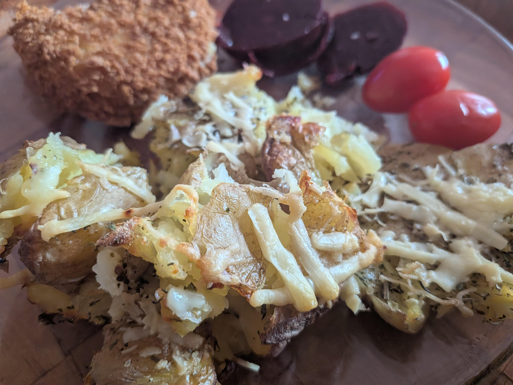

Cheesy Smashed Potatoes

These smashed baby potatoes are a lovely, simple side dish. I boil them first, gently smash them, then add olive oil, mixed herbs and whatever cheese I have in the fridge before baking. I used cheddar and Parmesan this time. They're easy to make with gluten-free ingredients.
Ingredients
- Baby potatoes
- Olive oil
- Salt and pepper
- Mixed herbs
- Grated cheese of your choice (I used cheddar and Parmesan)
Method
- Preheat the oven to 200°C.
- Boil the baby potatoes until tender, then drain them.
- Place the potatoes on a baking tray and gently squash each one using the bottom of a glass.
- Drizzle with olive oil, then sprinkle over the salt, pepper and mixed herbs.
- Scatter your chosen grated cheese over the top.
- Bake for about 25 minutes at 200°C, until the potatoes are golden and the cheese has melted.
My tip: You can use any cheese you like! I used Parmesan and cheddar simply because that was what I had in the fridge. Add as much or as little cheese and seasoning as you like. Check packaged ingredients if you need to avoid gluten.